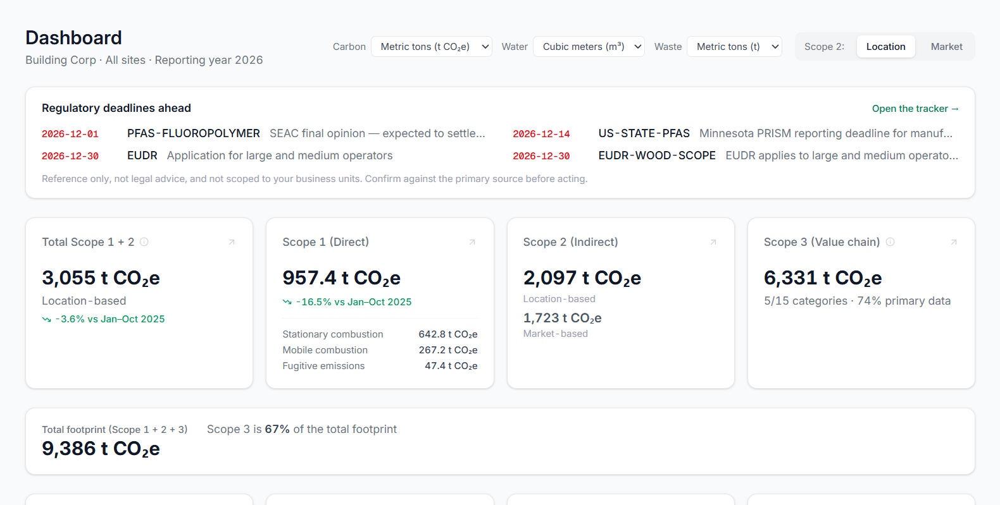
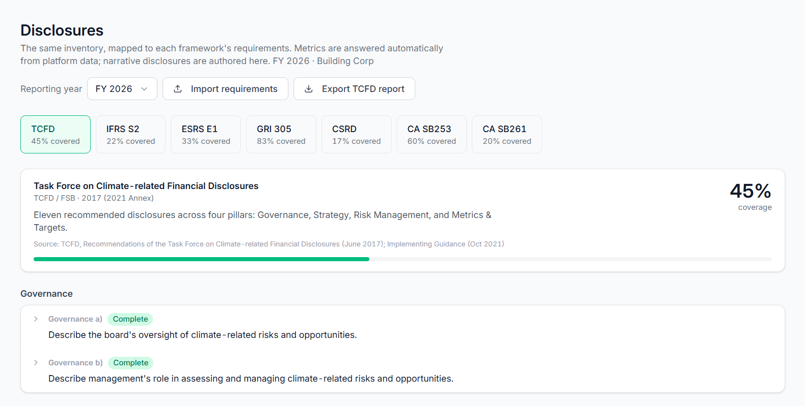
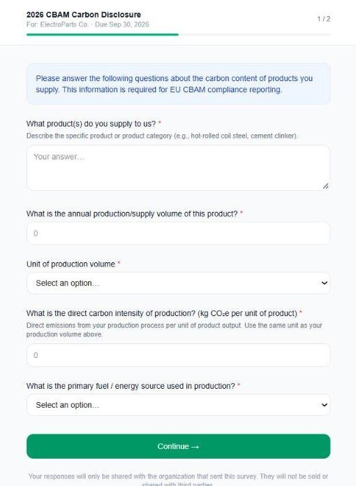

Open-source ESG platform · Apache-2.0
ESG software your team owns instead of rents.
Carbon accounting, supplier surveys, targets and framework disclosures in one system you run yourself, so the budget goes to reduction projects instead of platform subscriptions.

- Deadlines aheadFrom a regulatory tracker where every date carries a cited source.
- Scope 1 + 2 totalYear-over-year, across every site in your consolidation boundary.
- Scope 2, both waysLocation- and market-based on every entry: contract, then residual mix, then grid average.
- Scope 3, kept separateNever folded into the Scope 1 + 2 total, with category coverage and share of primary data shown.
Dashboard, demo data
What it replaces
Five subscriptions and a shared drive, in one system you own.
| Today you might pay for | BROC gives you |
|---|---|
| Scope 1, 2 and 3 with cited emission factors and full lineage on every figure: raw input, factor and factor source stored with each entry. | |
| Supplier surveys by link for CBAM, EUDR, PFAS, carbon or your own questions. Suppliers answer in a browser with no login. | |
| Goals with SBTi pathways, measured against a reduction-project pipeline with savings estimates. | |
| Framework reports built from the same data, with every omission named. | |
| Supporting documents attached to every reported figure, plus an append-only audit trail. |
A closer look
Built for the person an assurance provider will question.
Every figure carries its evidence
Activity data is entered once and calculated on the server with a cited factor. Attach the invoice or meter reading that backs it, and anyone can follow a number back to its source.

One inventory, every framework
TCFD, IFRS S2, ESRS, GRI and the California climate laws read from the same data. Metrics answer themselves, narrative is written once, and a CSRD report asks only for the topics your double materiality assessment found material.

Targets measured against the projects that will hit them
Set absolute, intensity or SBTi 1.5 °C goals, then see how much of the required reduction is already achieved and how much your project pipeline covers.

Suppliers answer in a browser, with no account
Send a link. Answers land on the supplier's record, scored for data quality. CBAM declarations feed the built-in calculator, and supplier figures feed Scope 3 Category 1.

A starting point, not a finished product
The framing, plumbing and wiring are in. The walls are left open.
The parts nobody should rebuild are done and tested. The layout is yours to fit to how your organization actually works.
Done and tested
- Data model and multi-site organization structure
- Calculation engine for Scope 1, 2 and 3
- Audit trail and evidence on every reported figure
- Disclosure mapping across frameworks
- Row-level security between organizations
Yours to shape
- Your sites, fuels and waste streams
- The emission factor sets you are licensed to use
- Connections to your own systems
- Your reporting rhythm and review steps
- Your name and logo on it
The numbers come first
The shipped reference factors (EPA, eGRID, AIB, IPCC AR6) were checked line by line against their publications, and the calculation engine was reviewed against GHG Protocol, ESRS, GRI and SBTi rules.
No figure is invented to fill a gap
A missing factor stops an entry with a message saying what to add, rather than a plausible guess. Open methodology choices are written down, not hidden.
Changed safely with AI
The repository teaches an AI coding assistant its rules, such as never inventing an emission factor, so your team can adapt it without breaking the numbers.
Is it right for you
An honest fit check.
A good fit if you
- report Scope 1, 2 and 3 and have outgrown spreadsheets, but don't want an enterprise contract to get out of them
- face CSRD, IFRS S2, CBAM, EUDR or SB 253 and need one set of data to answer them
- need every number to trace back to its source, because an assurance provider is going to ask
- have someone who can run a web app: an analyst, an IT partner, or an AI coding assistant
Not the right fit if you
- want a managed service that someone else runs and supports
- need a bundled Scope 3 factor library (you load the ones you are licensed for)
- have no one available to install and maintain a web application
Get started
Download it, then shape it to how your organization works.
There is no single required setup. The guides walk through one example route end to end; use it as a reference and run BROC on whatever your IT team already supports.
-
Choose where it runs
A PostgreSQL database, for example Supabase, Azure Database for PostgreSQL, AWS RDS or a server you already run. The application runs anywhere Node.js or a container does.
-
Install it
Apply the database scripts in order, then run the check that confirms the result. Demo data is one more script, if you want something to explore first.
-
Make it yours
Your sites, fuels, waste streams and factor sets, your sign-in provider, your name and logo. A practice workspace lets your team learn without touching reported figures.
Help getting started
Want it running without doing it all yourselves?
The code is free. If your team would rather have a sustainability practitioner set it up with you, that help is available.
- Standing up your own instanceinstall
- Moving your spreadsheets and history inmigrate
- Loading and checking your factor setsfactors
- Fitting it to your sites and reportingcustomise
- Getting ready for assuranceassure